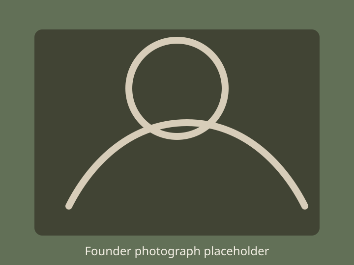

A Note from the Founder & Editor
Hi, I’m Laxmi Hansda, founder and editor of Adivasi Archive.
I created this archive to document and preserve the histories, cultures, photographs, documents and stories of Adivasi communities across India. Many of these records are scattered across different collections and sources, and I wanted to create a place where they could be brought together and explored more easily.
This archive is a growing effort to preserve community memory and make these records accessible for generations to come.
